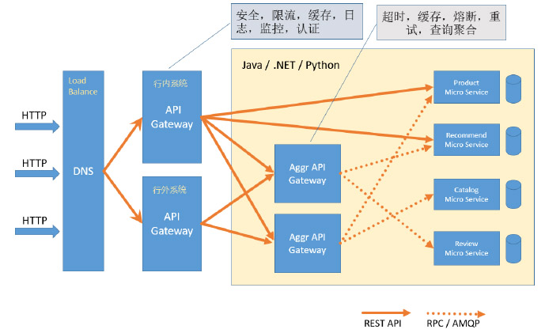

滴雨软件银行系统API网关功能

- 采用 API Gateway可以与微版务注册中心连接，实现微服务无感知动态扩容。
- API Gateway 对于无法访问的服务,可以做到自动熔断,无需人工参与。
- API Gateway 可以方便的实现蓝绿部署,金丝雀发布或A/B发布。
- API Gateway 做为系统统—入口,我们可以将各个微服务公共功能放在APl Gateway中实现,以尽可能减少各服务的职责。
- 帮助我们实现客户端的负载均衡
滴雨软件银行系统API网关架构图

服务融断流控
为保证服务高可用，最先想到的是服务集群，但集群并不能完全的保证服务高可用，
当某个服务出现故障时，在负载均衡的时候可能多次被调用到，调用方由于无法得到调用结果，会出现请求超时会其他异常，这时候如果不及时的熔断服务，
就有可能会有更多的调用者去调用已经出现故障的服务节点，造成大量调用失败，甚至引发联级故障的雪崩。
我们需要一个熔断机制，当某个节点出现故障时，及时的做熔断处理，防止更多的服务调用失败。
服务发现与负载均衡
支持灰度发布
是指在黑与白之间，能够平滑过渡的一种发布方式。在其上可以进行A/B testing，即让一部分用户继续用产品特性A，一部分用户开始用产品特性B，如果用户对B没有什么反对意见，那么逐步扩大范围，把所有用户都迁移到B上面来。灰度发布可以保证整体系统的稳定，在初始灰度的时候就可以发现、调整问题，以保证其影响度。
支持多种认证方式
- 1. Appkeys
- 2. OAuth2
- 3. OAuth2+JWT